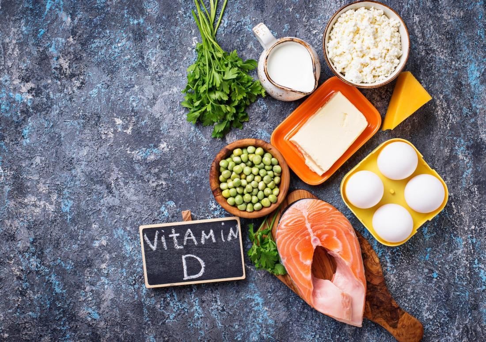
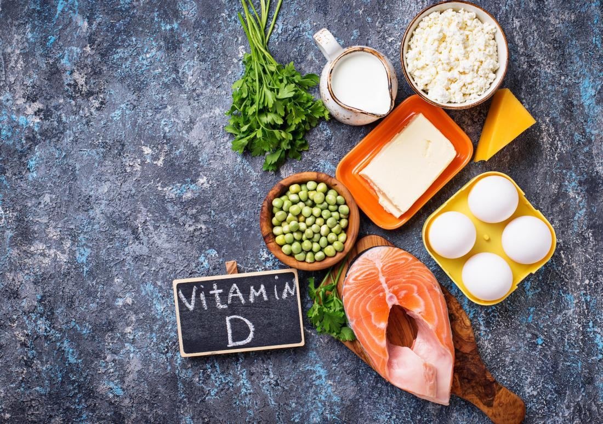

Health care in mindfull ways
-Methods and tips for happy and healthy life,July 23,2021
Mindfulness. It’s a pretty straightforward word. It suggests that the mind is fully attending to what’s happening, to what you’re doing, to the space you’re moving through. That might seem trivial, except for the annoying fact that we so often veer from the matter at hand. Our mind takes flight,we lose touch with our body, and pretty soon we’re engrossed in obsessive thoughts about something that just happened or fretting about the future. And that makes us anxious.
Immunity boosting food
-foods that are best in boosting immunity,July 23,2021

Eating a low-fat, plant-based diet may help give the immune system a boost. The immune system relies on white blood cells that produce antibodies to combat bacteria, viruses, and other invaders. Vegetarians have been shown to have more effective white blood cells when compared to nonvegetarians, due to a high intake of vitamins and low intake of fat.Some of the herbs have high immunity which is benificial for our health.
About Me
Dietitians and nutritionist.
experts in the use of food and nutrition
advise people on what to eat in order to lead
a healthy lifestyle or achieve
a specific health-related goal.
Popular Post
 

Follow Me
on the social media handles.